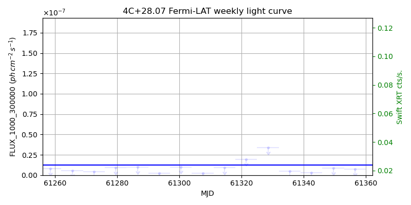

LAT Lightcurve site: https://fermi.gsfc.nasa.gov/ssc/data/access/lat/msl_lc/source/4C_p28d07
Swift site: https://www.swift.psu.edu/monitoring/source.php?source=4C+28.07
NED: Query
Time of last update of this page: UT: 2026-11-20 16:12 (MJD: 61364.676)
| Property | Value |
|---|---|
| R.A. | 2:37:52.32 |
| Dec. | 28:48:07.2 |
| z | 1.213 |
| 3FGL SpectrumType | LogParabola |
| 3FGL PL Index | |
| 3FGL Flux_100_300000 | 2.18e-07 1 / (s cm2) |
| 3FGL Flux_1000_300000 | 1.25e-08 1 / (s cm2) |
| 3FGL Flux >200 GeV | 2.06e-12 1 / (s cm2) |
| 3FGL Extrap. Crab >200 GeV | 0.01 |
| 3FGL Flux After EBL Absorption >200GeV | 1.61e-14 1 / (s cm2) |
| 3FGL EBL Crab Fraction >200GeV | 0.00 |
| MJD | dMJD | Flux | dFlux | Frac3FGL | FracCrab>200GeV | EBLFracCrab>200GeV |
|---|---|---|---|---|---|---|
| 61359.50 | 0.50 | 4.52e-07 | 0.00e+00 | 0.00 | 0.00 | 0.00 |
| 61360.50 | 0.50 | 5.49e-07 | 0.00e+00 | 0.00 | 0.00 | 0.00 |
| 61361.50 | 0.50 | 9.54e-08 | 0.00e+00 | 0.00 | 0.00 | 0.00 |
| 61362.50 | 0.50 | 4.17e-06 | 0.00e+00 | 0.00 | 0.00 | 0.00 |
| 61363.50 | 0.50 | 1.34e-06 | 0.00e+00 | 0.00 | 0.00 | 0.00 |

| MJD | dMJD | Flux | dFlux | Frac3FGL | FracCrab>200GeV | EBLFracCrab>200GeV |
|---|---|---|---|---|---|---|
| 61328.50 | 3.50 | 3.93e-07 | 0.00e+00 | 0.00 | 0.00 | 0.00 |
| 61335.50 | 3.50 | 3.97e-08 | 0.00e+00 | 0.00 | 0.00 | 0.00 |
| 61342.50 | 3.50 | 1.84e-07 | 0.00e+00 | 0.00 | 0.00 | 0.00 |
| 61349.50 | 3.50 | 3.33e-08 | 0.00e+00 | 0.00 | 0.00 | 0.00 |
| 61356.50 | 3.50 | 1.08e-07 | 0.00e+00 | 0.00 | 0.00 | 0.00 |

| MJD | dMJD | Flux | dFlux | Frac3FGL | FracCrab>200GeV | EBLFracCrab>200GeV |
|---|---|---|---|---|---|---|
| 61359.50 | 0.50 | 1.79e-08 | 0.00e+00 | 0.00 | 0.00 | 0.00 |
| 61360.50 | 0.50 | 1.59e-08 | 0.00e+00 | 0.00 | 0.00 | 0.00 |
| 61361.50 | 0.50 | 3.00e-08 | 0.00e+00 | 0.00 | 0.00 | 0.00 |
| 61362.50 | 0.50 | 7.73e-07 | 0.00e+00 | 0.00 | 0.00 | 0.00 |
| 61363.50 | 0.50 | 3.58e-07 | 0.00e+00 | 0.00 | 0.00 | 0.00 |

| MJD | dMJD | Flux | dFlux | Frac3FGL | FracCrab>200GeV | EBLFracCrab>200GeV |
|---|---|---|---|---|---|---|
| 61328.50 | 3.50 | 3.39e-08 | 0.00e+00 | 0.00 | 0.00 | 0.00 |
| 61335.50 | 3.50 | 4.73e-09 | 0.00e+00 | 0.00 | 0.00 | 0.00 |
| 61342.50 | 3.50 | 3.27e-09 | 0.00e+00 | 0.00 | 0.00 | 0.00 |
| 61349.50 | 3.50 | 8.72e-09 | 0.00e+00 | 0.00 | 0.00 | 0.00 |
| 61356.50 | 3.50 | 7.45e-09 | 0.00e+00 | 0.00 | 0.00 | 0.00 |
--------------------------------------------------------- Using user-supplied coords: 2:37:52.32 28:48:07.2 2000 --------------------------------------------------------- FLWO UT night of: 2026-11-21 Local Sid. @ Midnight: 03:37 Sunset (-15.0) (local, UT): 18:33 01:33 Sunrise (-15.0) (local, UT): 05:47 12:47 Moonrise (local, UT): Moonset (local, UT): 03:40 10:40 Moon phase: 0.85 --------------------------------------------------------- AzTime LSID UT Obj_el Obj_az Mn_el Mn_az Sep. --------------------------------------------------------- 18:33 22:09 01:33 32.6 73.7 47.9 117.4 36.1 19:03 22:39 02:03 38.7 76.5 53.3 125.0 35.9 19:33 23:09 02:33 45.0 79.2 58.2 134.7 35.7 20:03 23:39 03:03 51.3 82.0 62.3 146.9 35.5 20:33 00:09 03:33 57.7 85.0 65.1 162.1 35.3 21:03 00:39 04:03 64.0 88.2 66.3 179.7 35.1 21:33 01:09 04:33 70.4 92.2 65.4 197.5 34.9 22:03 01:39 05:03 76.8 98.2 62.9 213.2 34.7 22:33 02:09 05:33 83.0 111.3 59.0 225.9 34.5 23:03 02:39 06:03 87.2 181.5 54.2 235.9 34.3 23:33 03:09 06:33 82.9 249.2 48.9 243.9 34.1 00:03 03:39 07:03 76.7 262.0 43.2 250.4 33.9 00:33 04:10 07:33 70.3 267.9 37.3 255.9 33.7 01:03 04:40 08:03 63.9 271.8 31.2 260.7 33.4 01:33 05:10 08:33 57.5 275.1 25.1 265.1 33.2 02:03 05:40 09:03 51.2 278.0 19.0 269.2 33.0 02:33 06:10 09:33 44.9 280.8 12.9 273.0 32.7 03:03 06:40 10:03 38.6 283.6 6.8 276.9 32.5 03:33 07:10 10:33 32.4 286.3 1.0 280.7 32.2 04:03 07:40 11:03 26.3 289.2 -4.9 284.7 31.9 04:33 08:10 11:33 20.4 292.2 -11.1 288.8 31.6 05:03 08:40 12:03 14.5 295.3 -16.8 293.2 31.3 05:33 09:10 12:33 8.9 298.7 -22.3 298.1 31.0 05:47 09:25 12:47 6.2 300.4 -24.8 300.5 30.9 --------------------------------------------------------- Dark hours >55 deg.: 0.00